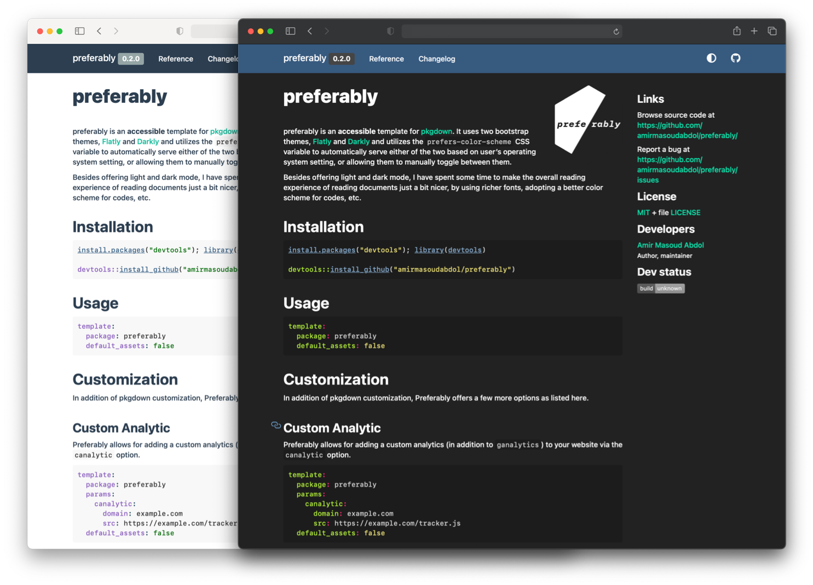

preferably is an accessible template for pkgdown. It uses two bootstrap themes, Flatly and Darkly and utilizes the prefers-color-scheme CSS variable to automatically serve either of the two based on user’s operating system setting, or allowing them to manually toggle between them.
Besides offering light and dark mode, I have spent some time to make the overall reading experience of pkgdown documentations just a bit nicer, by using richer fonts, adopting a better color scheme for codes, etc.

install.packages("devtools"); library(devtools)
devtools::install_github("amirmasoudabdol/preferably")In addition of pkgdown customization, Preferably offers a few more options as listed here.
Preferably allows for adding a custom analytics (in addition to ganalytics) to your website via the canalytic option.
template:
package: preferably
params:
canalytic:
domain: example.com
src: https://example.com/tracker.js
default_assets: falseSetting these command will generate the following line in the HTML:
<script async defer data-domain="example.com" src="https://example.com/tracker.js"></script>In case this setting does not satisfy your need or you have a better idea on how to implement this, please reach out on GitHub
In addition to the automatic color scheme switching, you can add a switch to the menu bar, e.g, , to allow for manual selection between light and dark themes. This can be done by setting the toggle option to manual.
package: preferably
params:
toggle: manualIn order to remove the toggle button, remove the toggle parameters entirely.